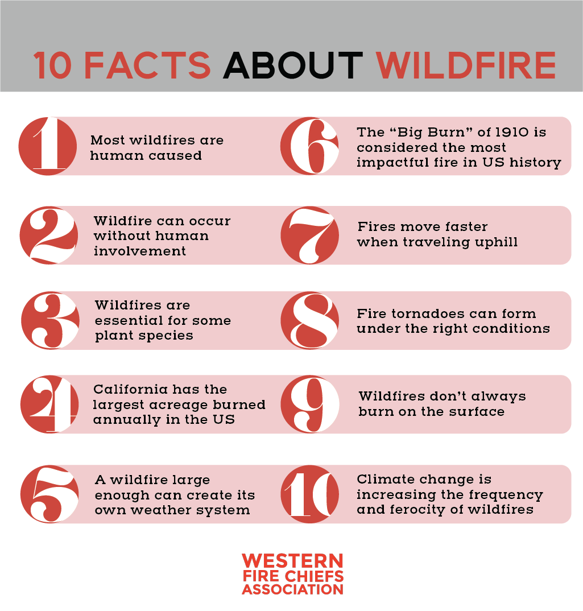
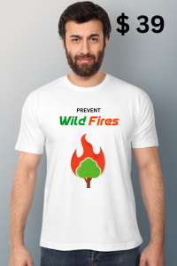

The Impacts of Climate Change on Wilfires
Article: Wildfires and Climate ChangeUnplanned, Uncontrolled, and Unpredictable fire in a forest
Wildfires, also known as forest fires or wildland fires, are uncontrolled fires that spread rapidly through vegetation. They can occur in forests, grasslands, and other types of landscapes and are often fueled by dry conditions, high temperatures, and strong winds. Wildfires can be ignited by natural causes, such as lightning strikes, or by human activities, including campfires, discarded cigarettes, and arson.

Resources
Emergency Contacts
1. Local Emergency Services: Dial the emergency number of the country (for eg. 911 for USA and Canada, and 112 for India) for immediate emergency assistance.
2. Fire Department: Contact your local fire department directly if you have their number.
3. Local Authorities: County or city emergency management offices often provide up-to-date information on wildfires.
2. Fire Department: Contact your local fire department directly if you have their number.
3. Local Authorities: County or city emergency management offices often provide up-to-date information on wildfires.
Natural Causes
1. Lightning: One of the most common natural causes. Lightning strikes can produce enough heat to ignite a fire, especially if the vegetation is dry.
2. Volcanic Activity: Lava and hot volcanic debris can start fires when they come into contact with vegetation.
3. Spontaneous Combustion: Under certain conditions, organic materials like leaves and wood can heat up and ignite spontaneously.
Human Causes
1. Campfires: Unattended or improperly extinguished campfires can easily spread and cause wildfires.
2. Cigarettes: Discarded cigarette butts can ignite dry vegetation, leading to wildfires.
3. Arson: Deliberately set fires are a significant cause of wildfires in some regions.
3. Fireworks: Fireworks can send sparks into dry vegetation, igniting fires.
Contributing Factors
1. Dry Conditions: Extended periods of dry weather create conditions conducive to wildfires by drying out vegetation.
2. High Temperatures: Heat waves can exacerbate the dryness of vegetation, making it more susceptible to ignition.
3. Low Humidity: Low humidity levels dry out vegetation, increasing the likelihood of ignition and the rapid spread of fire.
Personal Responsibility
1. Properly Dispose of Cigarettes: Never throw lit cigarettes on the ground. Use designated receptacles.
2. Fireworks: Avoid using fireworks in fire-prone areas, especially during dry seasons.
3. Equipment Use: Avoid using equipment that can generate sparks (chainsaws, mowers) during dry, windy conditions. Ensure vehicles and equipment have spark arrestors.
Home Management
1. Create Defensible Space: Maintain a defensible space around your home by clearing dry vegetation, leaves, and other flammable materials.
2. Use Fire-Resistant Landscaping Plant fire-resistant shrubs and trees. Keep grass and vegetation well-watered and trimmed.
3. Fire-Resistant Building Materials: Use fire-resistant materials for roofing, siding, and decking when building or renovating homes.
Community Action
1. Community Wildfire Protection Plans (CWPP): Participate in or support the development of a CWPP in your community. This plan outlines strategies for reducing wildfire risks.
2. Firewise USA Program: Engage in the Firewise USA program, which helps communities reduce wildfire risks through cooperative planning and action.
3. Local Ordinances: Support and adhere to local fire ordinances and regulations.
Environmental Impacts
1. Loss of Biodiversity:
Wildfires can destroy habitats and kill wildlife, leading to a loss of biodiversity. Some species may become endangered or extinct as a result.
2. Forest Degradation:
Fires can damage forests, reducing their ability to sequester carbon, which contributes to climate change.
3. Air and Water Quality:
Smoke from wildfires can pollute the air with particulate matter and toxic gases. Ash and debris can also contaminate water sources, affecting both ecosystems and human water supplies.
4. Soil Erosion:
The removal of vegetation by fire can lead to increased soil erosion, which can degrade land quality and lead to sedimentation in rivers and lakes.
Economic Impact
1. Property Damage:
Wildfires can destroy homes, businesses, and infrastructure, leading to significant financial losses.
2. Firefighting Costs:
The expenses related to fighting fires, including manpower, equipment, and resources, can be substantial.
3. Impact on Industries:
Agriculture, tourism, and forestry industries can suffer from the effects of wildfires, leading to economic downturns in affected areas.
4. Insurance Costs:
Increased risk of wildfires can lead to higher insurance premiums and reduced availability of coverage in high-risk areas.
Social Impacts
1. Displacement:
Wildfires can force communities to evacuate, leading to temporary or permanent displacement of residents.
2. Cummunity Disruption:
The destruction of homes and infrastructure can disrupt community cohesion and lead to long-term social challenges.
3. Loss of Cultural Sites:
Fires can damage or destroy culturally significant sites, leading to a loss of heritage and identity for affected communities.
4. Public Services Strain:
The resources needed to respond to wildfires can strain public services, impacting other areas such as healthcare and law enforcement.
Health Impacts
1. Respiratory Issues:
Exposure to smoke and particulate matter can cause respiratory problems, exacerbate asthma, and reduce lung function.
2. Forest Degradation:
Fires can damage forests, reducing their ability to sequester carbon, which contributes to climate change.
3. Heart-Related Illness:
The heat cause direct injuries and deaths due to burns, accidents during evacuations, or respiratory complications.
4. Injuries and Fatalities:
Wildfires can cause direct injuries and deaths due to burns, accidents during evacuations, or respiratory complications.
This series of fires burned an estimated 18.6 million hectares, destroyed over 5,900 buildings, and resulted in at least 34 deaths. It had a profound impact on wildlife, with approximately 3 billion animals affected. The fires were fueled by prolonged drought, high temperatures, and strong winds.
Occurring in California, USA, the Camp Fire is the deadliest and most destructive wildfire in California's history. It burned 153,336 acres, destroyed over 18,000 structures, and caused 85 civilian fatalities. The fire was primarily sparked by faulty electric transmission lines owned by Pacific Gas and Electric Company.
These fires burned over 1,467,000 acres, causing significant damage to homes, farmland, and forests. It was the worst wildfire season in Chile's history, driven by extremely high temperatures and prolonged drought conditions.
In Alberta, Canada, this fire forced the evacuation of nearly 90,000 residents of Fort McMurray and burned about 590,000 hectares. It stands as one of the costliest disasters in Canadian history, with its causes likely linked to human activity and dry conditions.
Often referred to as the "lungs of the Earth," the Amazon experienced an alarming increase in wildfires in 2019. The fires, many of which were set intentionally to clear land for agriculture, destroyed large areas of rainforest, contributing to significant biodiversity loss and impacting indigenous communities. The fires drew international concern due to the Amazon's critical role in carbon storage and climate regulation.
Uttarakhand experienced severe wildfires in 2016, burning approximately 4,000 hectares (nearly 10,000 acres) of forest land. The fires caused significant environmental damage, including loss of wildlife habitat and degraded air quality, posing health risks. Unusually dry conditions, high temperatures, strong winds, and human activities such as illegal logging and land clearing contributed to the fires' spread.
Q. Why is wildfire smoke bad for me?
Smoke is a mixture of gases and fine particles (particulate) released when things burn. In addition to burning your eyes, these fine particles and gases can be inhaled deep into your lungs. This makes it harder to breathe and may worsen other chronic health conditions such as asthma or heart disease.
Fortunately, most people who are exposed to smoke will not have lasting health problems. How much and how long you are exposed to the smoke, as well as your age and health status, helps determine whether or not you will experience smoke-related problems.
If you are experiencing serious medical problems for any reason, seek medical treatment immediately.
Q. What chemicals are in smoke from wildfires?
Wildfire smoke contains carbon monoxide, a colorless, odorless and toxic gas. Firefighters working near the fire are at greatest risk for high doses of carbon monoxide. Areas even a few hundred yards downwind of the fire where there are high particulate smoke levels typically don’t have high levels of carbon monoxide. Signs of high carbon monoxide levels in the blood include headaches, dizziness, nausea and decreased mental functioning.
Wildfire smoke contains other chemicals,many of which cause irritation to eyes, noses and throats. Find more detailed information on chemicals found in smoke in this publication from the Washington State Department of Ecology.
Q. What other natural disasters happen with wildfires?
The aftermath of a wildfire can be as disastrous, if not more so, than the fire. A particularly destructive fire burns away plants and trees that prevent erosion. If heavy rains occur after such a fire, landslides, ash floes, and flash floods can occur. This can result in property damage outside the immediate fire area, and can affect the water quality of streams, rivers and lakes.
Q. What can be done to reduce wildfires and/or damage?
Several methods, including so-called prescribed burning and thinning of trees, are being used in California and elsewhere to remove the buildup of vegetation that could become kindling for wildfires.
Keeley says we can't prevent wildfires and so should instead "adapt our lifestyle to them." He added, "What these fires tell us is that we need to recognize on these landscapes we're never going to get rid of fire. We cannot eliminate these fires."
He suggests urban planning can help to reduce the spread and damage caused by wildfires. For instance, some lawn vegetation such as palm trees and eucalyptus make for efficient wildfire fuel, as these plants hold on to their dead biomass longer than other plants.
Other measures: Some major wildfires have been started by downed power lines. Keeley suggests burying the lines underground. He added that small roadside barriers could reduce the spread of wildfires, which often get their start along roadsides.
Q. At what temperatures do forest fires burn?
An average surface fire on the forest floor might have flames reaching 1 meter in height and can reach temperatures of 800°C (1,472° F) or more. Under extreme conditions a fire can give off 10,000 kilowatts or more per meter of fire front. This would mean flame heights of 50 meters or more and flame temperatures exceeding 1200°C (2,192° F).
Q. What is a “prescribed fire”?
These are sometimes called prescribed burns, or controlled burns, but the term that most land management agencies use is “prescribed fire”. It is the process of treating land by using carefully and skillfully applied fire to burn some of the vegetation. When applied correctly by professionals, it is only done after writing a prescribed fire plan that addresses the specific characteristics of the tract of land being treated. It will include a “prescription” that requires that many different weather, environmental, and vegetation factors be within carefully defined parameters. The plan will also specify how the fire will be applied, by whom, and what fire control people and equipment must be on scene before the first match is lit. The reasons for using prescribed fire can be many, but they can often include: to replicate natural conditions, restore fire to the landscape, reduce unnaturally high accumulations of vegetation due to fire exclusion, reduce the fire hazard around structures or communities, enhance the habitat of animals, and control exotic species. The smoke from a prescribed fire can be a nuisance, but it is much less than would be created if the same area burned as an unplanned and uncontrolled wildfire. Fire is a natural part of most ecosystems. It is not a question of IF the land will burn, but WHEN and under what conditions…controlled, or uncontrolled.
One thing that can be confusing is that the media usually uses the term “controlled burn”, which for them can be anything from someone burning trash in their back yard to a federal agency conducting a 5,000-acre prescribed fire that has been planned for four years.
Q. How can I obtain certification so that I can use prescribed fire on my own land?
Check with your state forestry or wildland fire agency and ask if they have a program for land owners to use prescribed fire. For example, Texas has a law, HB 2599, that guarantees landowners the right to burn on their own property, then sets up a prescribed burn manager certification system administered by the Texas Department of Agriculture under the direction of the Prescribed Burning Board. For a fire department employee to become qualified as a prescribed fire burn boss requires many years of experience and training. There are numerous prerequisite positions and courses that are required. As they move up from one position to the next, the firefighter must document satisfactory performance on a fire or prescribed fire in each position. It can take 10 to 20 years of full time employment as a firefighter to move up from being a firefighter to a prescribed fire burn boss.
Keep in mind that the use of fire as a tool requires a great deal of knowledge and experience, and it is as much an art as a science. Many things can go wrong that can have catastrophic consequences. Anyone setting fire to the landscape, a private landowner or a government employee, should have liability insurance.
Q. How do I keep my home from burning in a wildfire?
Briefly, your home needs to be “fire safe”. That is, the flammable vegetation within 100 feet of the structures must be reduced to the point where fire can not easily spread from the natural vegetation to your home. And the structures must be of fire-resistant materials and design. Firewise.org has much more information.
Q. What types of airplanes and helicopters are used to put out fires?
Well, first, aircraft don’t put out fires. The best they can do is to slow down a fire to allow firefighters on the ground to get in close and actually put out the fire by applying water from hoses or to physically cut the vegetation away at the perimeter of the fire with hand tools so the fire runs out of fuel to burn.
Q. What is defensible space? And how do I create a defensible space?
Defensible space is an area at least 30 feet of lean, clean and green space surrounding your home. This space gives firefighters room to fight fires. Make your yard firewise by pruning shrubs and tree branches within 15 feet of your chimney or stovepipe. Remove dead tree branches that extend over the roof. Make your yard clean by raking leaves and removing dead tree limbs and twigs. Stack firewood at least 100 feet away from your home. Make your yard green by removing flammable vegetation and replacing it with fire-resistant plants.

Smoke is a mixture of gases and fine particles (particulate) released when things burn. In addition to burning your eyes, these fine particles and gases can be inhaled deep into your lungs. This makes it harder to breathe and may worsen other chronic health conditions such as asthma or heart disease.
Fortunately, most people who are exposed to smoke will not have lasting health problems. How much and how long you are exposed to the smoke, as well as your age and health status, helps determine whether or not you will experience smoke-related problems.
If you are experiencing serious medical problems for any reason, seek medical treatment immediately.
Q. What chemicals are in smoke from wildfires?
Wildfire smoke contains carbon monoxide, a colorless, odorless and toxic gas. Firefighters working near the fire are at greatest risk for high doses of carbon monoxide. Areas even a few hundred yards downwind of the fire where there are high particulate smoke levels typically don’t have high levels of carbon monoxide. Signs of high carbon monoxide levels in the blood include headaches, dizziness, nausea and decreased mental functioning.
Wildfire smoke contains other chemicals,many of which cause irritation to eyes, noses and throats. Find more detailed information on chemicals found in smoke in this publication from the Washington State Department of Ecology.
Q. What other natural disasters happen with wildfires?
The aftermath of a wildfire can be as disastrous, if not more so, than the fire. A particularly destructive fire burns away plants and trees that prevent erosion. If heavy rains occur after such a fire, landslides, ash floes, and flash floods can occur. This can result in property damage outside the immediate fire area, and can affect the water quality of streams, rivers and lakes.
Q. What can be done to reduce wildfires and/or damage?
Several methods, including so-called prescribed burning and thinning of trees, are being used in California and elsewhere to remove the buildup of vegetation that could become kindling for wildfires.
Keeley says we can't prevent wildfires and so should instead "adapt our lifestyle to them." He added, "What these fires tell us is that we need to recognize on these landscapes we're never going to get rid of fire. We cannot eliminate these fires."
He suggests urban planning can help to reduce the spread and damage caused by wildfires. For instance, some lawn vegetation such as palm trees and eucalyptus make for efficient wildfire fuel, as these plants hold on to their dead biomass longer than other plants.
Other measures: Some major wildfires have been started by downed power lines. Keeley suggests burying the lines underground. He added that small roadside barriers could reduce the spread of wildfires, which often get their start along roadsides.
Q. At what temperatures do forest fires burn?
An average surface fire on the forest floor might have flames reaching 1 meter in height and can reach temperatures of 800°C (1,472° F) or more. Under extreme conditions a fire can give off 10,000 kilowatts or more per meter of fire front. This would mean flame heights of 50 meters or more and flame temperatures exceeding 1200°C (2,192° F).
Q. What is a “prescribed fire”?
These are sometimes called prescribed burns, or controlled burns, but the term that most land management agencies use is “prescribed fire”. It is the process of treating land by using carefully and skillfully applied fire to burn some of the vegetation. When applied correctly by professionals, it is only done after writing a prescribed fire plan that addresses the specific characteristics of the tract of land being treated. It will include a “prescription” that requires that many different weather, environmental, and vegetation factors be within carefully defined parameters. The plan will also specify how the fire will be applied, by whom, and what fire control people and equipment must be on scene before the first match is lit. The reasons for using prescribed fire can be many, but they can often include: to replicate natural conditions, restore fire to the landscape, reduce unnaturally high accumulations of vegetation due to fire exclusion, reduce the fire hazard around structures or communities, enhance the habitat of animals, and control exotic species. The smoke from a prescribed fire can be a nuisance, but it is much less than would be created if the same area burned as an unplanned and uncontrolled wildfire. Fire is a natural part of most ecosystems. It is not a question of IF the land will burn, but WHEN and under what conditions…controlled, or uncontrolled.
One thing that can be confusing is that the media usually uses the term “controlled burn”, which for them can be anything from someone burning trash in their back yard to a federal agency conducting a 5,000-acre prescribed fire that has been planned for four years.
Q. How can I obtain certification so that I can use prescribed fire on my own land?
Check with your state forestry or wildland fire agency and ask if they have a program for land owners to use prescribed fire. For example, Texas has a law, HB 2599, that guarantees landowners the right to burn on their own property, then sets up a prescribed burn manager certification system administered by the Texas Department of Agriculture under the direction of the Prescribed Burning Board. For a fire department employee to become qualified as a prescribed fire burn boss requires many years of experience and training. There are numerous prerequisite positions and courses that are required. As they move up from one position to the next, the firefighter must document satisfactory performance on a fire or prescribed fire in each position. It can take 10 to 20 years of full time employment as a firefighter to move up from being a firefighter to a prescribed fire burn boss.
Keep in mind that the use of fire as a tool requires a great deal of knowledge and experience, and it is as much an art as a science. Many things can go wrong that can have catastrophic consequences. Anyone setting fire to the landscape, a private landowner or a government employee, should have liability insurance.
Q. How do I keep my home from burning in a wildfire?
Briefly, your home needs to be “fire safe”. That is, the flammable vegetation within 100 feet of the structures must be reduced to the point where fire can not easily spread from the natural vegetation to your home. And the structures must be of fire-resistant materials and design. Firewise.org has much more information.
Q. What types of airplanes and helicopters are used to put out fires?
Well, first, aircraft don’t put out fires. The best they can do is to slow down a fire to allow firefighters on the ground to get in close and actually put out the fire by applying water from hoses or to physically cut the vegetation away at the perimeter of the fire with hand tools so the fire runs out of fuel to burn.
Q. What is defensible space? And how do I create a defensible space?
Defensible space is an area at least 30 feet of lean, clean and green space surrounding your home. This space gives firefighters room to fight fires. Make your yard firewise by pruning shrubs and tree branches within 15 feet of your chimney or stovepipe. Remove dead tree branches that extend over the roof. Make your yard clean by raking leaves and removing dead tree limbs and twigs. Stack firewood at least 100 feet away from your home. Make your yard green by removing flammable vegetation and replacing it with fire-resistant plants.
All Products
3 Items
3 Items

.png)
.png)